为了解决传统桥梁检测效率低、不规范、检测报告制作工作量巨大等问题，提升桥梁养护的科学化、精准化、时效化，我公司研发了智能化桥涵检测系统平台，将病害检测、桥梁巡查、数据管理、养护决策、健康监测、分析预警等管养流程完整“嵌入”系统，提高了业务操作效率，大大缩短了病害处置反应时间。该系统平台分为公路桥梁检测系统和城市桥梁检测系统，由Web端和移动端两大部分组成，移动端是信息采集工具，Web端是信息管理平台。系统具有以下特点：第一，便捷的桥涵养护信息采集，通过移动端方便的实现现场病害信息的找、测、标、记、拍等采集工作。第二，智能的桥梁检测评定，通过分析桥梁检测信息，系统能够实现04和11标准的智能评定并生成评定报告。第三、强大的养护信息统计分析，系统为用户提供了强大的统计分析功能，充分利用桥涵检测数据，为养护决策提供支持。系统运用信息化技术能够协助公司更好的开展桥涵养护业务，提高生产效率，为养护工作增值。
 图 1智能化桥涵检测系统首页
图 1智能化桥涵检测系统首页
 图 2检测项目管理
图 2检测项目管理
桥梁实时监测系统是通过各类传感设备对桥梁结构状况进行实时监测，实现对桥梁结构状况的监控与评估，为桥梁在特殊气候、交通条件下或桥梁运营状况异常严重时发出预警信号，为桥梁的维护维修和管理决策提供依据与指导。目前桥梁实时监测系统普遍存在数据利用不充分、设备运营状况不掌握、预警信息不及时等现象。我公司针对目前桥梁实时监测系统应用中存在的不足，研制开发了桥梁监测系统集成管理平台统，实现了对各类实时监测数据的集中管理和分析预警。主要包括以下功能： 1、能够集成管理动态秤重、动位移、静位移、应力、应变、加速度、索力、温度、风速风向、GPS等监测数据； 2、能够监测各类传感设备的运行状况；进行实时预警； 3、能够实时分析各类监测数据的完整情况，生成日、月、年数据完整报告； 4、能够对各类监测数据进行实时分析，生成红色、黄色预警信息。
图 3登录页 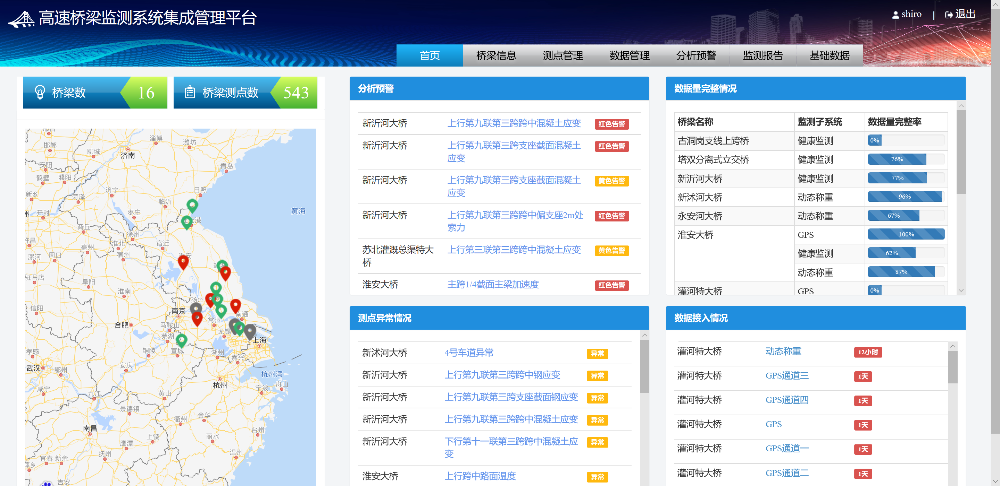图 4系统首页 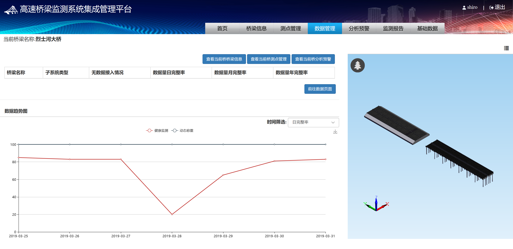图 5数据分析协同办公自动化系统（项目管理平台）是我公司针对乙方单位，特别是工程施工单位开发的集办公自动化、项目管理、财务管理于一体的协同办公平台。平台集成了行政事务管理、项目经营管理、生产任务管理、合同管理、预算管理、结算管理、核算管理、进度管理、材料管理、现场管理、档案管理等功能，并预留接口能够与绩效（薪酬）对接。系统具有强大的业务流平台，能够实现流转审批和工序管理；系统能够进行数据综合分析挖掘，统计出公司、部门、项目年度利润情况和经营目标完成情况。
图 6系统登录 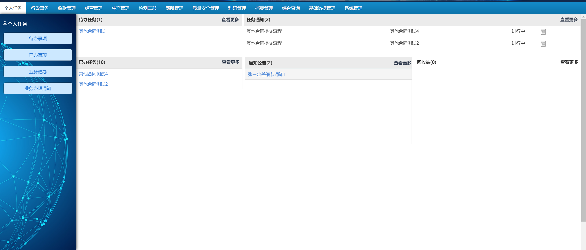图 7任务办理页面 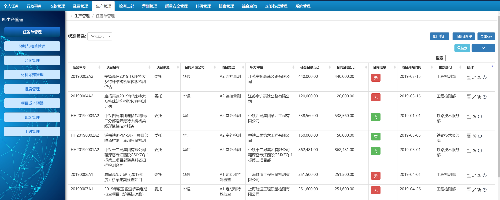图 8项目管理页面 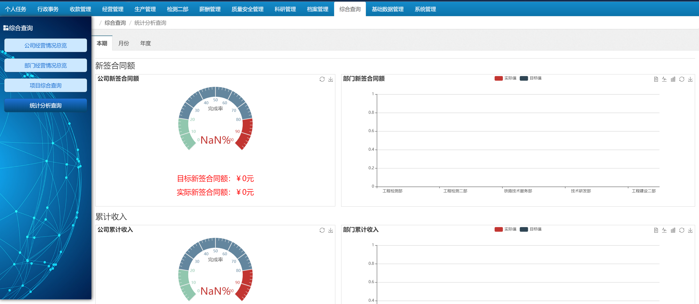图 9经营状况分析页面该系统实现对盘库式档案柜（通过电机驱动档案柜各层自动转动，通过摄像头实现档案的自动扫码识别）的自动控制，系统包括服务端软件和下位机软件。服务端软件实现档案的管理，能够管理档案柜、各档案柜的档案；下位机软件实现对档案柜的自动控制，通过串口指令，实现档案柜的自动转层、定位、档案扫码识别等。服务端软件与下位机软件通过网络实现通信，通过服务端软件实现档案管理、自动盘库、档案借阅、档案归还、档案消档等。
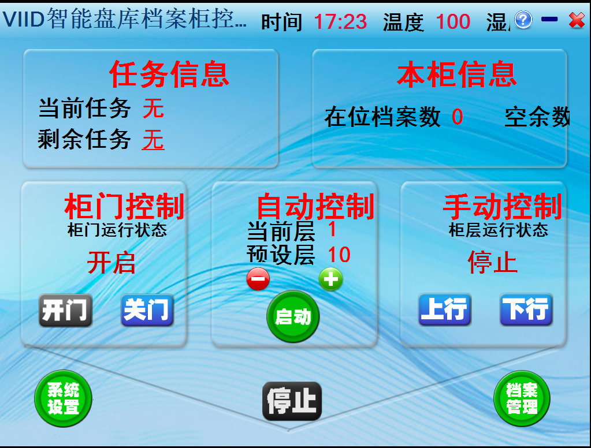图 10下位机控制软件 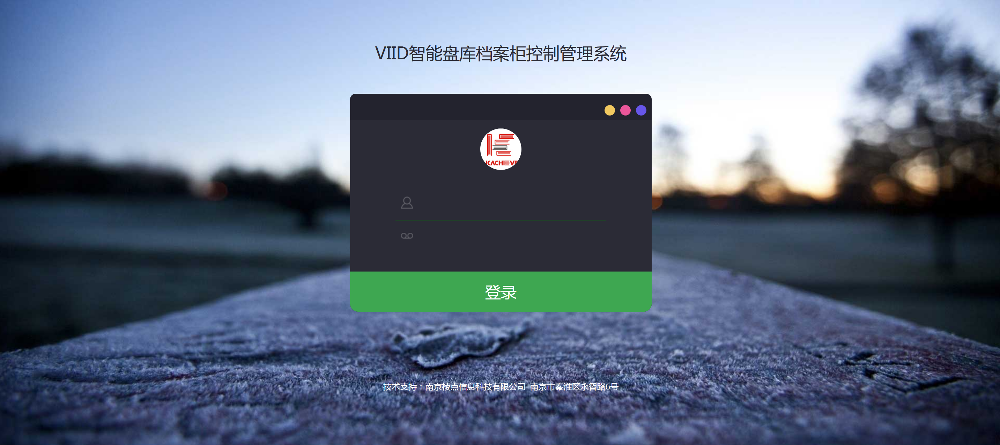图 11服务端软件登录 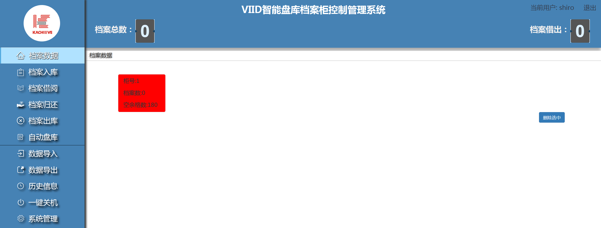图 12档案柜管理 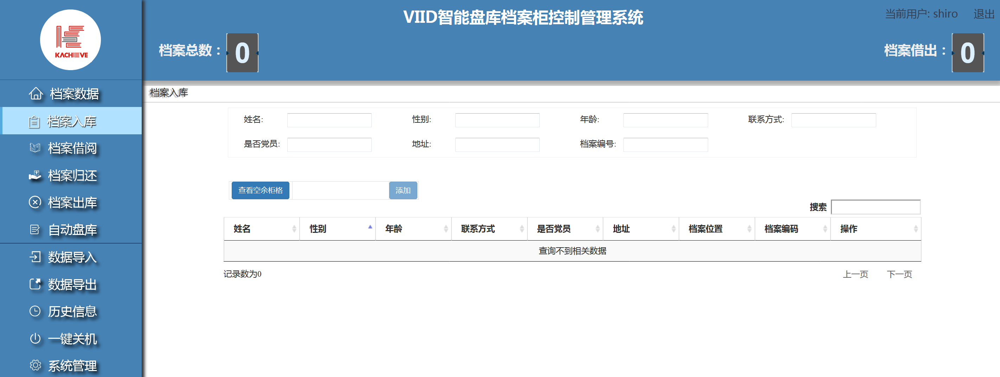图 13档案入库高空气象探测系统数据处理及质量审核软件是高空气象探测系统的重要组成部分，主要功能是根据相关业务法规对探空系统终端软件生成的探空资料、球坐标资料及设备信息等资料的分析处理，并自动/人工处理探空、球坐标数据，产生常规及非常规报文、报表及存档信息化资料。
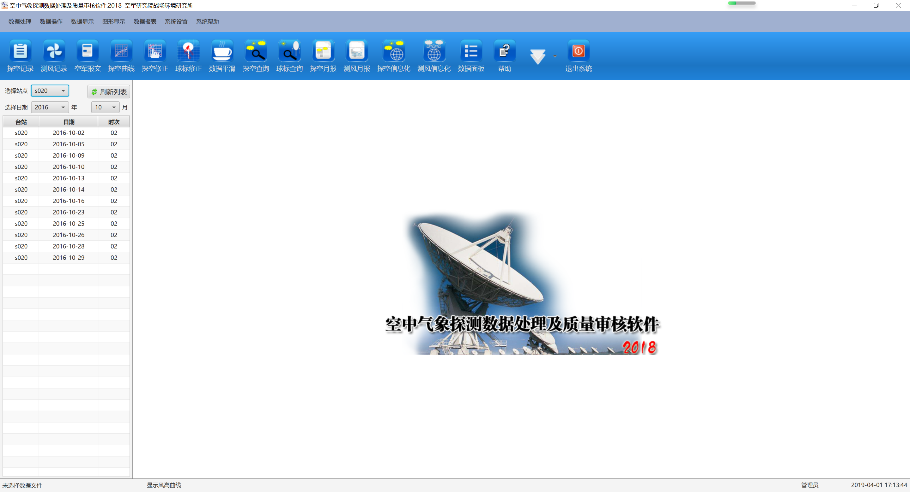图 14数据浏览 图 15探空曲线
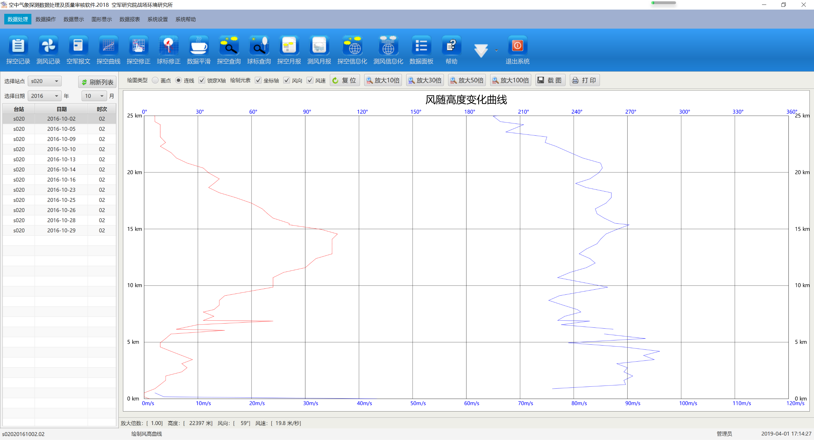图 16风高曲线
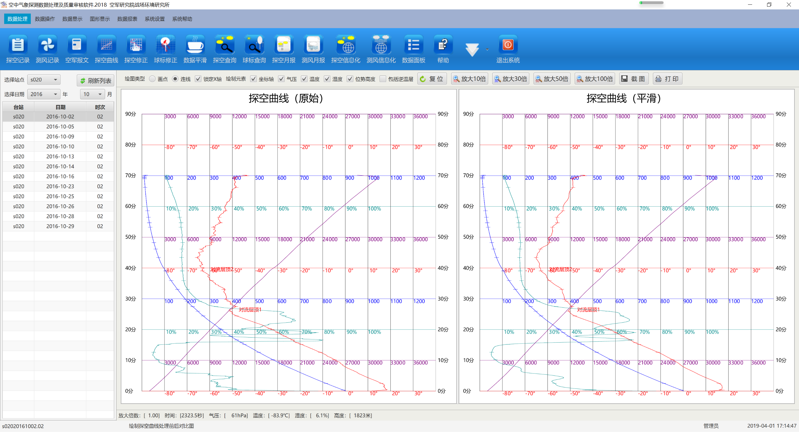图 17对比曲线
图 15探空曲线
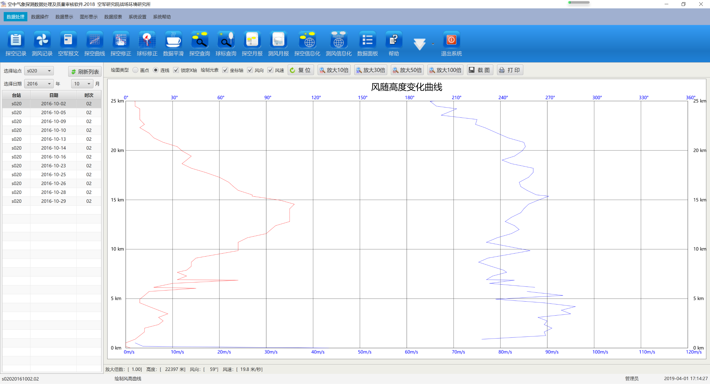图 16风高曲线
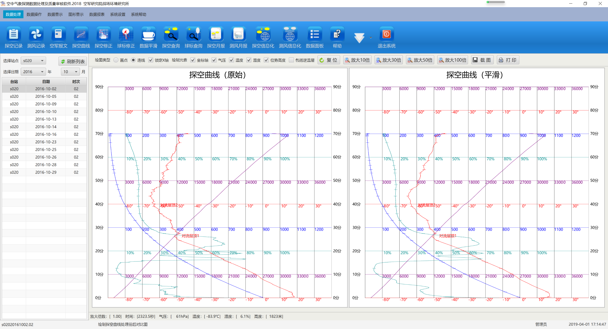图 17对比曲线